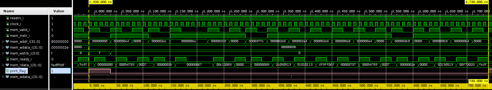
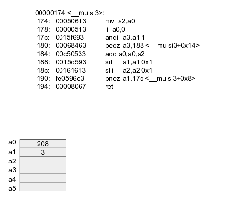

All the code that you write has to be executed on the processor. With computers being ever more powerful, it is easy to forget about all the work a processor is doing. Irrespective of how simple a job might seem, it still needs to be executed. The example illustrates this. The only thing the processor needs to do is output 2 values. Nonetheless with the software as seen before, this takes 74 clock cycles.
#include "print.h"
void main(void) {
print_str(";");
print_str(".");
}
When a processor is doing a lot of work, it can become useful if parts of that work could be delegated or offloaded to another processor. Which portions of the work need to be offloaded ? What will the performance gain be ? What is the price (€s, area in silicon, energy, … ) ? These are simple questions, but answering them is not straightforward !!
The first coprocessors saw the light of day in the 1970’s. It became clear that only doing calculations with integer numbers was to restrictive. The first coprocessors were floating-point units (FPUs). These coprocessor were so heavily used that their functionality got integrated in the processor itself.
The PicoRV32 implementation we’ve used so far only supports the RV32I instruction set. This means that only the basic integer operations are supported. Although the instruction set does not contain a multiplication operation, it can be used nonetheless.
#include "print.h"
void main(void) {
volatile unsigned int value1, value2, product;
value1 = 208;
value2 = 3;
product = value1 * value2;
print_dec(product);
}Running this C-code generates an output .dat file. After parsing the output looks like this.
00000000000000000000000000110110 - 054 - 0x36 - 6
00000000000000000000000000110010 - 050 - 0x32 - 2
00000000000000000000000000110100 - 052 - 0x34 - 4The reason that this works without having a mul instruction is because of the compiler jumps. The compiler figures out what needs to be done and comes up with a recipe to achieve what the code prescribes.
00000174 <__mulsi3>:
174: 00050613 mv a2,a0
178: 00000513 li a0,0
17c: 0015f693 andi a3,a1,1
180: 00068463 beqz a3,188 <__mulsi3+0x14>
184: 00c50533 add a0,a0,a2
188: 0015d593 srli a1,a1,0x1
18c: 00161613 slli a2,a2,0x1
190: fe0596e3 bnez a1,17c <__mulsi3+0x8>
194: 00008067 ret
00000274 <main>:
274: fe010113 addi sp,sp,-32
278: 0d000793 li a5,208
27c: 00f12223 sw a5,4(sp)
280: 00300793 li a5,3
284: 00f12423 sw a5,8(sp)
288: 00412503 lw a0,4(sp)
28c: 00812583 lw a1,8(sp)
290: 00112e23 sw ra,28(sp)
294: ee1ff0ef jal ra,174 <__mulsi3>Changing one letter in the Makefile allows the compiler use the mul instruction.
ARCHITECTURE = rv32i$(subst C,c,$(COMPRESSED_ISA))ARCHITECTURE = rv32im$(subst C,c,$(COMPRESSED_ISA))00000168 <main>:
168: ff010113 addi sp,sp,-16
16c: 0d000793 li a5,208
170: 00f12223 sw a5,4(sp)
174: 00300793 li a5,3
178: 00f12423 sw a5,8(sp)
17c: 00412783 lw a5,4(sp)
180: 00812703 lw a4,8(sp)
184: 02e787b3 mul a5,a5,a4
188: 00f12623 sw a5,12(sp)
18c: 00c12503 lw a0,12(sp)
190: 01010113 addi sp,sp,16
194: f29ff06f j bc <print_dec>